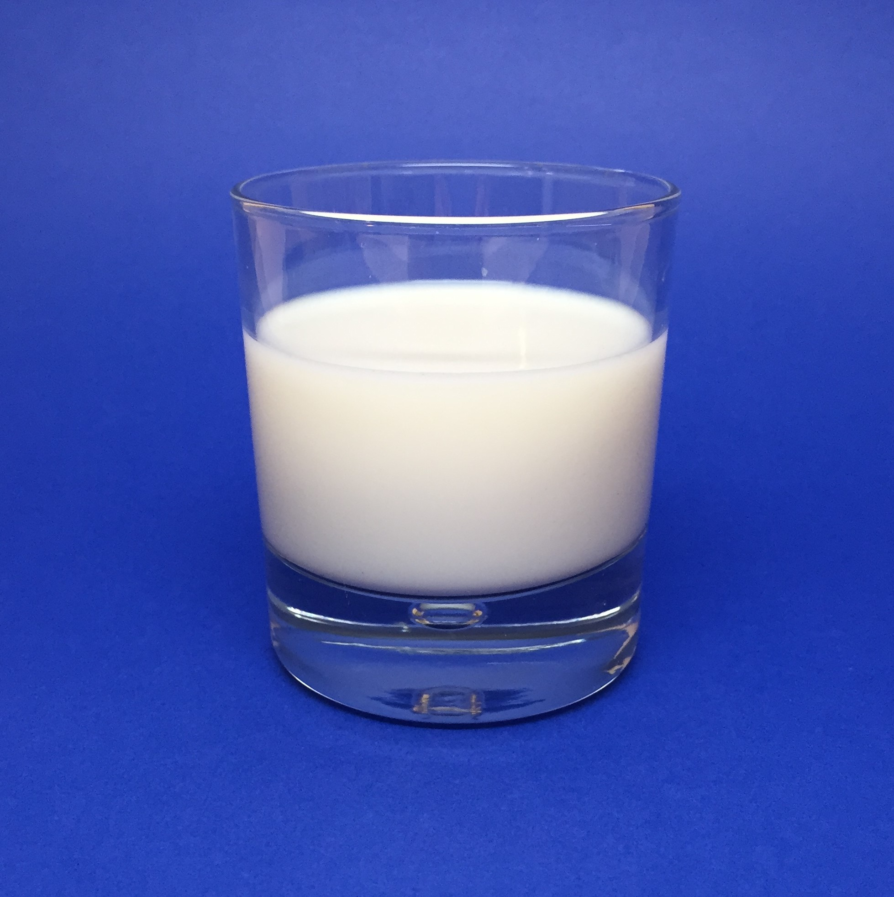
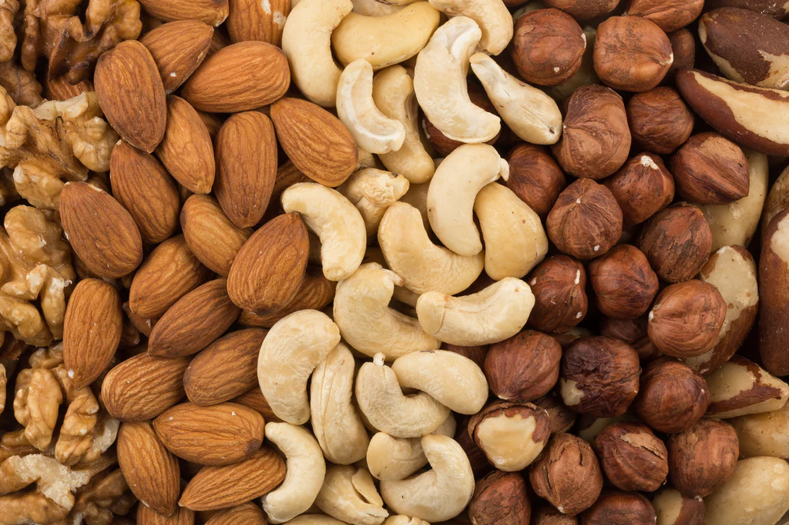
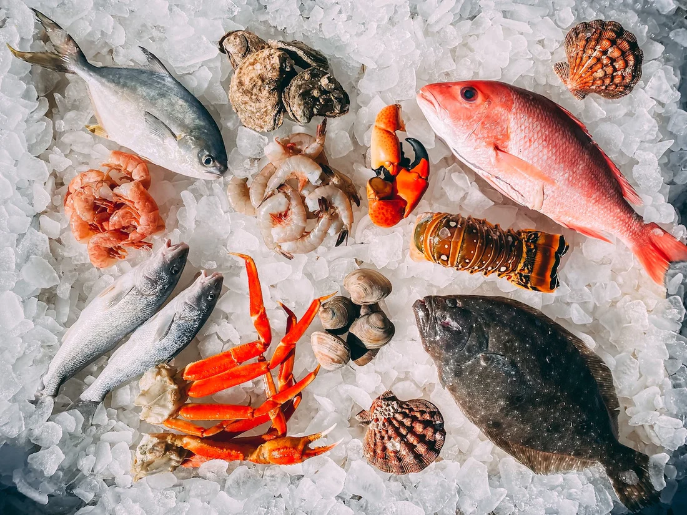

Why do we get
Food Allergies?

Food allergens are substances that can trigger an allergic reaction in some individuals. These reactions occur
when the immune system mistakenly identifies certain proteins in food as harmful and releases chemicals,
such as histamines, to protect the body. Common food allergens account for the majority of allergic reactions
and are often regulated in many countries to ensure proper labeling.
Here are 8 Common Food Allergens You need to watch out for:
Milk
- - Most Common food allergen is proteins in cow's milk, including casein and whey,
can cause allergic reactions. This allergy is common in children but can be outgrown. Eggs
- - It is not entirely sure why people get allergic to eggs but oddly, some people
are only allergic so some parts of the egg like egg yolks and whites, but not the whole thing. Peanuts
- - This is also one of the most common allergies, yet they have a more severe
reaction and can very deadly, It can also be the most deadliest allergen in the list. Tree Nuts
- - Like Peanuts, they aren't that deadly but still not worth the risk to consume.
Their only difference is that Tree nuts have seeds or in the inside them. - Examples are Almonds, Acorns, Hazelnuts, Cashews and etc.
Soy
- - The main allergen in Soy is Soy protein, Soy is a common ingredient in many
processed foods, so people with soy allergies need to be more cautious with
what they're eating and read the labels. - Examples are Soya, Soy Sauce and Taho
Wheat
- - This has a unique allergic reaction because the main allergen in wheat
is gluten, this allergy itself is a specific condition. - Examples are Bread, Pastry, and more
Seafood
- - Fish, Crustaceans and shellfish also give allergic reactions and triggers
swelling of the body and rashes. Sesame
- - There are types of sesame, some sesame seeds dont give you allergies and
some do, sesame oil for example, gives you allergies but actual sesame itself does not.
==============================================
==============================================
==============================================
==============================================
==============================================

==============================================

==============================================
==============================================